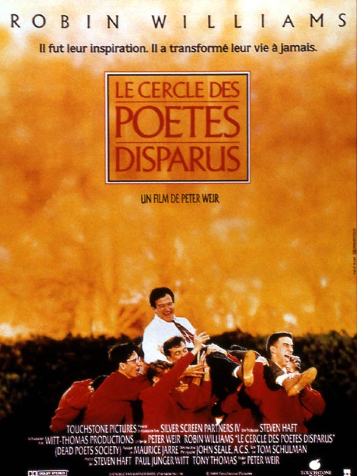

<section class="article-disney-plus py-5">
  <div class="container">
    <div class="row justify-content-center">
      <article class="col-sm-8">
        <h2>Le cercle des poètes disparus</h2>
        <h5>« Ô Capitaine ! Mon Capitaine ! », 13 mars 2021</h5>
        <p>
          « Le cercle des poètes disparus » est un film réalisé par Peter Weir, d’une durée de 2h08 et sorti en 1990.
        </p>
        <br>

        <div class="article_img">
          
        </div>

        <br>

          <p>
            <strong class="emphase">De quoi ça parle :</strong> Le jeune Todd Anderson, timide plus que jamais, fait son entrée dans la prestigieuse école de Welton en même temps que M. Keating, professeur de lettres anglaises et marginal de l’enseignement.
          </p>
          <br>
          <p>
            <strong class="emphase">Mon avis :</strong> Il est des films qui marquent toute une génération et c’est bien le cas de ce long métrage.
            C’est une apogée d’humanisme et de poésie, un savoureux pêle-mêle de sentiments, une leçon de vie à grande échelle.
            Robin Williams excelle dans le rôle de professeur marginal qui encouragera ses élèves à comprendre le sens du mot « liberté ». Le reste du casting n’en est pas moins performant et rend chaque personnage plus attachant que jamais.
            Le sujet, bien que vraisemblablement déjà abordé maintes fois au cinéma, est poignant, traité de façon magistrale et invite son public à réfléchir par lui-même et à accepter ses émotions sans avoir peur du « qu’en dira-t-on ? »
          </p>

          <br>
          <p>
            <strong class="emphase">Anecdote :</strong> « Le cercle des poètes disparus » , basé sur les souvenirs du scénariste Tom Schulman, a remporté l’Oscar du « Meilleur scénario original » et le césar du « Meilleur film étranger » .
            Le film a été novellisé, ce qui veut dire que le film n’est pas tiré du livre mais que le livre est paru suite au succès du film.
          </p>

        <br>

        <iframe width="560" height="315" src="https://www.youtube.com/embed/oGXlLXLjsFA" title="YouTube video player" frameborder="0" allow="accelerometer; autoplay; clipboard-write; encrypted-media; gyroscope; picture-in-picture" allowfullscreen></iframe>

        <br>

        <p class="signature text-end"><strong>Angèle</strong></p>
      </article>
    </div>
  </div>
</section>

